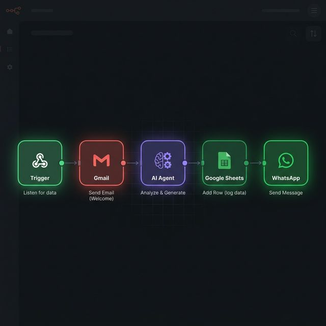
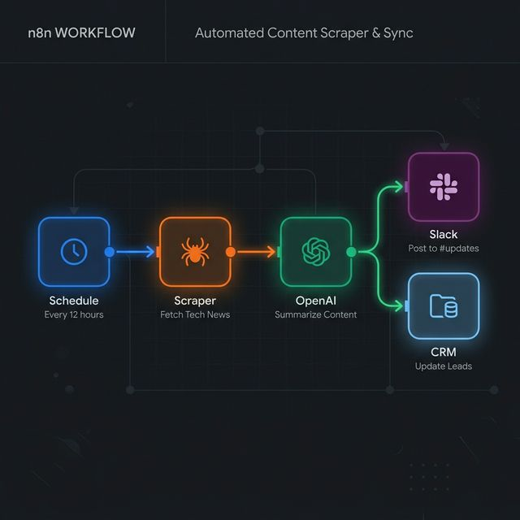
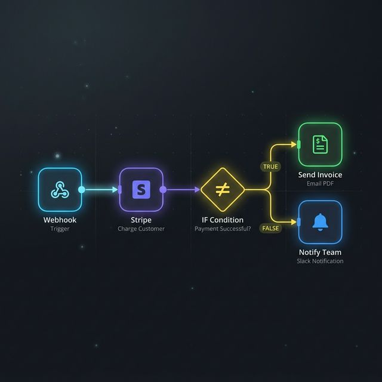
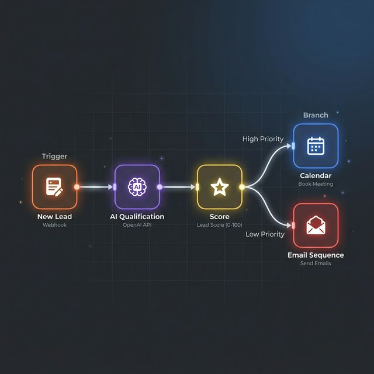
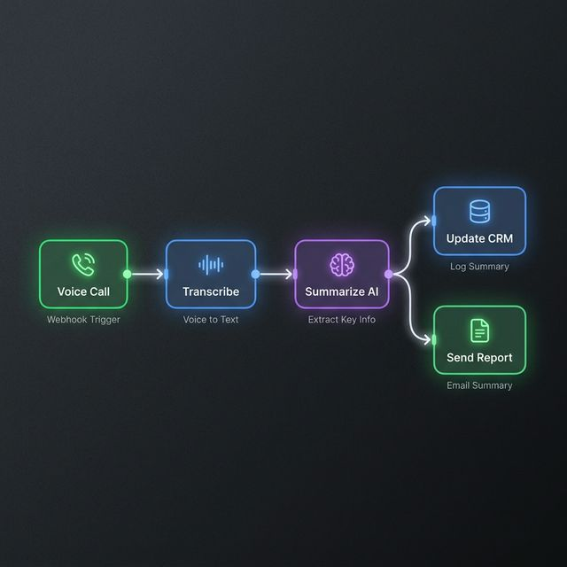
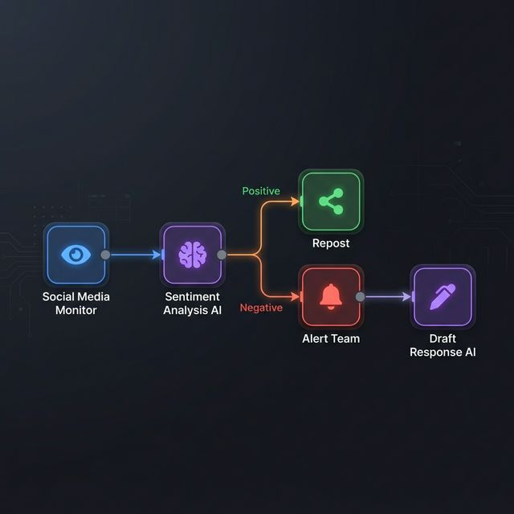

Conectamos tus herramientas, eliminamos tareas repetitivas y creamos flujos inteligentes que trabajan por ti 24/7 usando n8n + IA.
Flujos de trabajo reales construidos con n8n + IA que ya están funcionando para nuestros clientes.

Recibe emails, los analiza con IA, genera respuestas, registra en Sheets y notifica por WhatsApp.

Extrae contenido web cada 12h, lo resume con IA, publica en Slack y actualiza tu CRM automáticamente.

Webhook de Stripe → valida pagos → envía facturas automáticamente y notifica al equipo si falla.

Nuevo lead → IA lo cualifica y puntúa → prioridad alta va a Calendar, baja a secuencia de emails.

Llamada telefónica → transcripción → resumen con IA → actualiza CRM y envía reporte por email.

Monitoriza menciones → analiza sentimiento con IA → repostea positivos, alerta y responde negativos.
Activar una automatización es tan fácil como pulsar un botón.
Explora los flujos disponibles y elige el que mejor se adapte a las necesidades de tu negocio.
Accede al panel de administración, configura tus credenciales y activa la automatización con un clic.
La automatización se ejecuta continuamente. Monitoriza su estado y resultados desde tu dashboard.
Tu panel de administración es el centro de control de todas tus automatizaciones.
Activa, desactiva y monitoriza cada flujo de trabajo desde tu panel privado. Ve métricas en tiempo real, historial de ejecuciones y logs de errores.
Acceder al Panel →